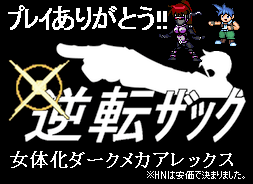
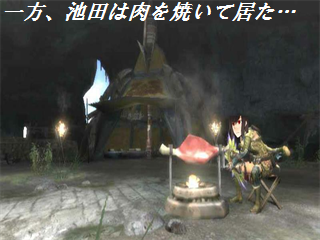

初めての方へ
このサイトは2ちゃんねる ニュース速報VIP板 RPGツクールスレッド(VIPツクスレ)に関するコンテンツを取り扱ったサイトです。 同所の性質上、当サイト内においても内輪・アングラ・不健全要素を含んでいます。
VIPツクスレに初めて訪れる方、書いてあることが良く分からない方は、 閲覧を差し控えるか、半年ほどROMしていただくことを推奨致します。
企画概要
「VIPRPG紅白2013」は、VIPツクスレで毎年開催されている ツクール作品を公開しあい、感想を付け合うことを目的とした企画です。
詳しくはリンクから過去の祭りをご覧ください。
投票審査
作品公開後、人気投票を行います。
各作品ごとに投票ページを設置し、集計結果に基づいて総合順位を決めます。
≫投票要綱
≫投票サンプルページ
スケジュール
| エントリー受付 | |
|---|---|
| 作品提出 | 以降の提出は遅刻扱い 遅刻提出は最終更新まで |
| 作品公開 | |
| 最終更新日 | 2014年1月31日予定 |
| 投票期間 | |
| 開票 |
参加
参加要綱と参加条件をよく読み、内容に了承した上で、必要事項を記入してメールでエントリーしてください。
≫参加要綱
参加条件
- RPGツクールで作られた自分の作品であること
プログラムやWOLF RPGエディターなどで製作されたゲームは参加禁止
ただし、RPGツクールに関係したツール作品のエントリーは自己責任で可 - エントリーは1人1枠 かつ 提出する作品も1人1つまで
1つのzipファイルの中に複数のゲームファイルを封入するのは自己責任で可 - 未公開作品のみ
すでに公開済みである自作品のリメイク品 または
未公開の追加要素・変更要素を含む自作品での参加も自己責任で可
ただしエントリー後、作品公開日までに未公開部分を公開するのは禁止
提出
提出受付開始後、作品をzip形式で圧縮し、以下の方法で提出してください。
≫提出方法
修正
作品提出後、作品を修正する場合は、以下の方法で修正ファイルをアップしてください。
≫修正方法
≫修正アップローダ
① /
② /
③ /
④ /
⑤
BBS
≫掲示板
運営スレ サイトの管理運営のための掲示板です。管理人からのお知らせなどを書き込みます。質問や報告などもこちらへどうぞ。
感想スレ 各作品の専用スレッドがあります。作品の感想を書き込む、攻略・ゲームデータ修正の報告などにご利用ください。
BackNumbers


当サイトへのリンク
当サイトはリンクフリーです。作品ページだけ抜き出してリンクしていただいても構いません。以下のバナーをご自由にご利用ください。バナーは直リンクも可能です。
200x40 頂きもの

200x40

部門別
単純評価 ：
熱中 |
技術 |
物語 |
演出 |
斬新さ |
遊びやすさ |
ワロさ |
ひどさ
相関評価 ：
熱中 |
技術 |
物語 |
演出 |
斬新さ |
遊びやすさ |
ワロさ |
ひどさ
表彰会場
ここでは、投票において優秀な成績を収めた作品をピックアップして紹介しています。
また、投票後に各作品作者様からお寄せいただいたコメントも併せて掲載しています。
(※現段階でコメントをいただけた作者様のみ)
部門賞
熱中1位 | 技術1位 | 物語1位 | 演出1位 | 斬新さ1位 | 遊びやすさ1位 | ワロさ1位 | ひどさ1位
熱中2位 | 技術2位 | 物語2位 | 演出2位 | 斬新さ2位 | 遊びやすさ2位 | ワロさ2位 | ひどさ2位
熱中3位 | 技術3位 | 物語3位 | 演出3位 | 斬新さ3位 | 遊びやすさ3位 | ワロさ3位 | ひどさ3位
【総合1位】
【全部門１位（単純評価）】
【熱中度部門1位（相関評価）】
【技術部門1位（相関評価）】
【演出部門2位（相関評価）】
【斬新さ部門1位（相関評価）】
| No.72 - ★クッキーのクッキー☆ |

| 作品ページ / 本体ダウンロード(18.8MB) / BBS / 投票結果 | |
| 作者：ＫＳＤ | 使用ツール：2000 |
| ジャンル：クッキー☆ | 配信/投稿：いいぜ/いいぜ |
| 作品総評：[熱2技2語0演2遊2笑2酷2] 本紅白最大のダークホースにして年末の魔物。エントリー時点で受けた衝撃と、その内容を見てからの衝撃はいずれも今でも忘れることができません。ネタに関しては例のアレにつき多言は避けますが、それでも「クッキー☆」を「ヨッシーのクッキー」をベースとしたゲームへと昇華させたという発想それ自体、そして何よりここまで完成度の高いゲームに仕上げた技術力については高く評価されて然るべきでありましょう。内容も一見ネタゲーと見えてその実は作り込まれており、パッチを重ねるごとにやり込み要素も充実しているため、やるゲとしてのボリュームも十分すぎるほど十分です。ネタが通じる人向けであるという感はどうしても否めませんが、分かった上で遊ぶには恐らくはこの上ない作品でありましょう。 (Hiro/男性/26歳 ～ 30歳) | |
| 作者コメント： こんなゲームに投票しなくていいから…（良心） | |
【総合2位】
【熱中度部門2位（相関評価）】
【物語部門1位（相関評価）】
【遊びやすさ部門1位（相関評価）】
| No.6 - ★アリスの標本箱 |

| 作品ページ / 本体ダウンロード(15.3MB) / BBS / 投票結果 | |
| 作者：藻太郎 | 使用ツール：2000 |
| ジャンル：荒唐無稽なデフォ戦ＲＰＧ２ | 配信/投稿：可・可/可・可 |
| 作品総評：[熱2技1語2演2遊2笑2酷1] 前作のときにも思ったのですが、VIPRPGには珍しく、かなりはっきりとした自分の世界を持っているツクラーさんだなと感じました。それでいて、独りよがりで終わることは決してなく、魅せ方も心得ています。 プレイヤーになにをしてほしいか、なにを感じてほしいか。作者さんは直接手を下すのではなく、そっと行き場を示すだけ。どっぷりと頭までハマることができました。 (-/男性/26歳 ～ 30歳) | |
| 作者コメント： 真の臆病者は幸福さえも恐れる、といいますが、そのような心持ちです。 この順位は身に余るのではないか、過去作から切り離し作品単体で見ればさてどうか、等々、 脳裏をよぎる自省は絶えません。が、いったん保留し、プレイヤーの方々にしめやかに感謝。 得た糧をもとに、自己のよどみにふたたび沈潜しようと思います。 今日より明日なんじゃ。というわけで、次の作品からの呼び声にそなえます。 | |
【総合3位】
【演出部門1位（相関評価）】
| No.28 - ★逆転ザック |

| 作品ページ / 本体ダウンロード(4.24MB) / BBS / 投票結果 | |
| 作者：女体化ダークメカアレックス | 使用ツール：2000 |
| ジャンル：法廷バトルADV | 配信/投稿：モチのロン/メチャロン |
| 作品総評：[熱2技2語2演2遊1笑2酷1] 悪く言えば元の素材ありきなゲームではありますが、それでもその良さを壊さず、なおかつVIPRPGらしいオリジナリティをふんだんに盛り込んだ素晴らしい作品でした!動作の軽さやキー操作のし易さはある意味本家以上で、よく工夫されているなあと感心しました。上下キーでいいですよね、たしかに。本家をリスペクトしつつ、文章はすべてオリジナルで打ったのだと思いますが、これがしっかり書かれていたのが良かった! 目立った誤字脱字もなく、かといって適当に考えたとは思えない内容が、私のハートに確かに響きました。筋書きを知ってるはずなのにクライマックスで涙ぐみそうになったのは、きっとそれが理由でしょう。とにかく、プレイして良かったと思える良作でした。かなりの労力がかかっていると思われますが、できる事ならいつか事件もオリジナルの続編をプレイしてみたいです。楽しいゲームをありがとうございました! (G-tea/男性/31歳 ～ 40歳) | |
 | |
【熱中度部門3位（相関評価）】
【物語部門2位（相関評価）】
| No.5 - ★ヴァンパイアⅡ -DOMINION- |

| 作品ページ / 本体ダウンロード(38.0MB) / BBS / 投票結果 | |
| 作者：池田さん | 使用ツール：2000 |
| ジャンル：ダークアクション見るゲー | 配信/投稿：佐川/急便 |
| 作品総評：[熱2技1語1演0遊0笑0酷1] バイオハザードのゾンビのような性質を持ったヴァンパイア組織、「ユダの血族」とその血族に因縁を持つヴァンパイアハンター、「おぜう」との戦いを描いた見るゲ。種々の少年漫画的ワクワク感をかき集めてMIXしてある。ツッコミどころは多く荒削りな作風。受け付けない人にとっては見る価値のないものとなるかもしれない。細かいことを気にしなければ、突き上げてくる高揚と期待に身を任せ、登場人物のギャップ描写にときめいているうちに全話観終えることになると思う。 (こと/男性/21歳 ～ 25歳) | |
 | |
【技術部門2位（相関評価）】
【斬新さ部門2位（相関評価）】
| No.4 - ★カスタムバトエン -mosimo- |

| 作品ページ / 本体ダウンロード(7.43MB) / BBS / 投票結果 | |
| 作者：天下り次郎 | 使用ツール：2000 |
| ジャンル：バトルえんぴつ風カードゲーム | 配信/投稿：可/可 |
| 作品総評：[熱2技2語1演1遊2笑1酷0] 使える技はサイコロの数次第の運ゲーに多人数戦、疲労の概念を導入して戦略的に戦えるように工夫した傑作。敵の使用デッキも多彩で自然に「こういう戦術もあるのか」とプレイヤーが気付き色々と工夫したくなるような誘導も見事。カードゲームは物量勝負、手間をかける程に良くなるジャンルなので完全版や改良版の続編が出たら嬉しいなぁ。とても面白かったです。 (孔雀23号/男性/26歳 ～ 30歳) | |
| 作者コメント： PIAI＆たくさんの投票ありがとうございます！ 感想を見る限り、人によって組んだデッキが千差万別だったのが一番嬉しいですね。 続編やアプデ版の構想も一応ありますが投下するとしたらスレになる気がします。 | |
【技術部門3位（相関評価）】
| No.55 - ★娘様のジャンプアクション |

| 作品ページ / 本体ダウンロード(1.53MB) / BBS / 投票結果 | |
| 作者：アサリ | 使用ツール：2000 |
| ジャンル：ステージクリア型のアクション | 配信/投稿：可/可 |
| 作品総評：[熱2技2語0演2遊0笑2酷0] 全体的に丁寧な作りであった。ステージ数は少ないものの、一つ一つが丁寧に作られ、ステージの特色が十分に出ていたと思う。ステージから出ると選択画面が昼から夜になったり、それに伴いBGMが変化したり、一番見るステージ選択画面であるからこそ飽きさせない工夫がされていると思った。 (紫蘭/男性/21歳 ～ 25歳) | |
| 作者コメント： 投票、及び、コメントありがとうございます。 技術賞 、マジで嬉しいです。 | |
【物語部門3位（相関評価）】
| No.13 - ★ドラ子かわいい |

| 作品ページ / 本体ダウンロード(12.3MB) / BBS / 投票結果 | |
| 作者：Ｓテル | 使用ツール：2000 |
| ジャンル：ゴリ押しRPG | 配信/投稿：114/514 |
| 作品総評：[熱2技2語2演2遊0笑1酷2] エスリンサーガバーストや迫真幻月RPGを知っているならニヤリとしたり、衝撃の展開に驚かされたりととにかくすごいとしか言えなかった。 (-/男性/21歳 ～ 25歳) | |
【演出部門3位（相関評価）】
【ワロさ部門1位（相関評価）】
【ひどさ部門2位（相関評価）】
| No.51 - ★イクゾーダス |

| 作品ページ / 本体ダウンロード(1.01MB) / BBS / 投票結果 | |
| 作者：内藤春人 | 使用ツール：2000 |
| ジャンル：本当の勇気を知る刹那のRPG | 配信/投稿：可/可 |
| 作品総評：[熱2技2語0演2遊0笑1酷2] どこか懐かしさを覚える雰囲気、凝った作りのドット絵、そして衝撃的なラスト。これは今紅白屈指の超大作である! (-/男性/21歳 ～ 25歳) | |
| 作者コメント： みなさまありがとうございました。 この作品は、柑橘類の木の枝を踏み、トゲが靴を貫通し足に刺さるという、私のすっぱい体験から生まれました。 それゆえミカンっぽい終わり方になってしまっていますがこれにてカンキツです！ ウマイ！！ ありがとうございました。 （内藤春人/女性/11歳 ～ 15歳） | |
【斬新さ部門3位（相関評価）】
| No.8 - ★無双庫番 |

| 作品ページ / 本体ダウンロード(2.00MB) / BBS / 投票結果 | |
| 作者：海老１０ | 使用ツール：2000 |
| ジャンル：思考停止パズル | 配信/投稿：自己責任 |
| 作品総評：[熱2技2語0演2遊2笑1酷0] すでに完成されたパズルの印象を持つ倉庫番をこのように活かしてくるとは思いませんでした。 技を無制限に使えることで、一つの面がクリアできないがために、以降の面に進めないパズルゲームにつきものの理不尽さがなくなっています。それでいてクリアしたらクリアしたで「次はまっとうにクリアできるようにしよう」とやる気が向上します。 ルールはシンプルながら、チュートリアル的な最初のワールドも挟んであるので、非常にとっつきやすい。とても面白かったです。 (-/男性/26歳 ～ 30歳) | |
| 作者コメント：
( ﾟдﾟ) 「斬新さ部門３位」
＿(__つ/￣￣￣/＿ ＼/ / ￣￣￣ ( ﾟдﾟ ) ＿(__つ/￣￣￣/＿ ＼/ / ￣￣￣ | |
【遊びやすさ部門2位（相関評価）】
| No.47 - ★ルインシーカー -寂しがりやのカタコンベ- |

| 作品ページ / 本体ダウンロード(5.73MB) / BBS / 投票結果 | |
| 作者：ツノザメ怪人 | 使用ツール：2000 |
| ジャンル：見るゲとやるゲが両方そなわり最強に見える | 配信/投稿：私は一向に構わんッ！/同じく |
| 作品総評：[熱2技0語2演1遊1笑2酷1] 手頃な謎解きと気になる続き、とんとん拍子に進むテンポのよさでPIAIしてて楽しい作品だったラナさんかわいい、でも好きなのはファルコンの糞野郎っぷり (-/男性/21歳 ～ 25歳) | |
| 作者コメント： 遊びやすさ２位という身に余る賞を頂き、驚きと喜びを隠せません。 プレイヤーと投票をしてくれた皆様にただひたすら感謝です。ありがとうございます！ 頂いた感想などを糧に、もっと皆さんに喜ばれるゲームを作って行きたいと思います | |
【遊びやすさ部門3位（相関評価）】
| No.3 - ★RPGツクール the run |

| 作品ページ / 本体ダウンロード(0.58MB) / BBS / 投票結果 | |
| 作者：ユニ | 使用ツール：2000 |
| ジャンル：レースゲーム | 配信/投稿：君は動画を配信してもいいししなくてもいい。/また、動画投稿をしてもいい。 |
| 作品総評：[熱1技1語0演1遊1笑1酷0] タイトル画面から伝わるレトロな雰囲気とシンプルなゲーム内容がマッチしていて作品に統一感がある。ツクール2000製にしては珍しいレースアクションというジャンルなのだけどスピード感も十分だ。レースゲーム故にシンプルでプレイヤーの出来ることが少ない。プレイヤーの入力がキャラクターの方向転換にしか使われなく、より入力で出来ることを増やすか、より入力しないで出来ることを増やすかでゲーム性の発展方向が見えてきそう。単純な繰り返し遊ぶゲームなので、リトライがお手軽でストレスなく再挑戦できるのはありがたい。 (サルトルおっかけた/男性/26歳 ～ 30歳) | |
| 作者コメント： 相関評価の遊びやすさ部門で表彰台に登れたことを嬉しく思う。まさかの受賞に驚いたよ。 エターならずに完成にこぎつけられたのは、 アドバイスをくれたVIPRPGツクールスレッドの皆さんや後輩Aのお陰だよ。 投票してくださった方だけでなく、プレイしてくださった皆さん、 スレの皆さん、後輩Aに感謝する。 | |
【ワロさ部門2位（相関評価）】
| No.56 - ★超日本列島とらべる絵草紙 |

| 作品ページ / 本体ダウンロード(14.7MB) / BBS / 投票結果 | |
| 作者：黄泉つ | 使用ツール：2000 |
| ジャンル：ジェットコースター☆みるげ | 配信/投稿：をかし/めでたし |
| 作品総評：[熱1技1語1演1遊1笑1酷1] 遅刻提出でも信じて待ってよかったです。即ぴあいしました。以下感想。 「ジェットコースター」に偽りなし。ハナからプレイヤーについていかせる気のないシナリオ進行は過去作と変わらず、ここまで突き抜けていれば潔い。 贅沢な素材使用の方はどんどん進化していて、ケーキもラーメンもステーキも纏めて煮込んで鍋にしましたって感じ。 不満点を言うなら「なんじゃとー」のSEがもっとしつこく使ってよかったし、おばけカルテットとしての出番がもっとほしかったかな。あとほんとなんでもいいのでぴあい後のおまけ要素って大好きなので入れてほしかった。 (桜田ぴよこ/女性/21歳 ～ 25歳) | |
| 作者コメント： なんじゃとー！ 笑いの打ち上げ花火。どっーん！ 祭の締めにほっこりした気持ちになってくれれば皆幸せ、と。 今年度No.1並みに遅刻したなか刹那の投票期間にこんなにも支持して下さって 誠に、そんなことよりサメの話しようぜェ。 | |
【ワロさ部門3位（相関評価）】
| No.68 - ★AleBr |

| 作品ページ / 本体ダウンロード(2.45MB) / BBS / 投票結果 | |
| 作者：せくては | 使用ツール：2000 |
| ジャンル：ksg | 配信/投稿：可/可 |
| 作品総評：[熱2技1語1演2遊1笑2酷2] とにかく一つ一つのネタが面白く会話のテンポも良いのでサクサク読み進めて大いに笑える ラストはちょっとしんみり?(-/男性/21歳 ～ 25歳) | |
| 作者コメント： やったぁぁあぁああああああああああああ！！！！！！！！！ あっりがとぉぉぉおおおおぉおぉおおおおお！！！！！！！！！ | |
【ひどさ部門1位（相関評価）】
| No.42 - ★もしもアイスⅢが母親だったら |

| 作品ページ / 本体ダウンロード(3.48MB) / BBS / 投票結果 | |
| 作者：生活保護君 | 使用ツール：2000 |
| ジャンル：見るゲ | 配信/投稿：不可/不可 |
| 作品総評：[熱2技2語2演2遊2笑2酷2] 2013ねん最大の酷さ。 (山本山/男性/31歳 ～ 40歳) | |
| 作者コメント： 自分でも部門賞を取れると思っていませんでした。 これからも映倫ギリギリ？の、これはヒドイ！と思われるｋｓｇをｔｋっていきたいです。 | |
【ひどさ部門3位（相関評価）】
| No.36 - ★ゴメスのあなから |

| 作品ページ / 本体ダウンロード(38.5MB) / BBS / 投票結果 | |
| 作者：一般1-3 | 使用ツール：2000 |
| ジャンル：糞味噌ADV | 配信/投稿：可/可 |
| 作品総評：[熱2技2語2演2遊2笑2酷2] もう「いつも通り最低」の一言で十分ですね。 最低過ぎて素晴らしいですよ、ほんと。 (-/男性/26歳 ～ 30歳) | |
| 作者コメント： 「遊んでくれてありがとうございましたあああ！！ 今後もよりひどい作品をtkるため精進します。」 | |